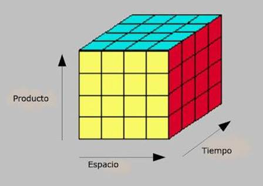

Las bases de datos multidimensionales (MBD) están optimizadas para trabajar en un ambiente de Data Warehouse, es decir, una gran colección de datos históricos de una empresa que se almacenan con fines analíticos para tomar decisiones comerciales.
Dentro de una base de datos multidimensional se organizan los datos en una estructura de múltiples dimensiones, donde cada una de ella representa un aspecto diferente de los datos, como el tiempo, la ubicación o el producto. Esto significa que las bases de datos multidimensionales se conforman a partir de diversas bases de datos relacionales.
Mientras que en la base de datos relacional se consulta información a través del Lenguaje de Consulta Estructurado (SQL), en la base de datos multidimensional se accede mediante una aplicación de procesamiento analítico en línea (OLAP). Los sistemas OLAP están diseñados para manejar consultas complejas en poco tiempo.
Se utilizan principalmente para crear aplicaciones en el sistema OLAP también conocidos como cubos multidimensionales. Tiene un campo por cada dimensión y otro por cada métrica o hecho.
